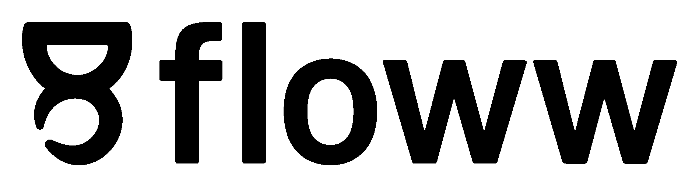

Mail / Accounts

John Doe
johnDoefake@gmail.com
Mail / Accounts
John Doe
johnDoefake@gmail.com
AI-Email
Accounting
Floww Dashboard is a simple dashboard for your web application. It is designed to be simple and easy to use. It is also customizable and can be used with any web application.
Floww Dashboard can be used with any web application. It is simple and easy to use. It is also customizable and can be used with any web application.
Floww Dashboard can be installed by adding the following code to your web application.
<link rel="stylesheet" href="floww-v2.css">
<script src="floww-v2.js"></script>
Floww Dashboard can be customized by changing the root variables in the CSS file. The root variables are used to set the width and height of the navbar, sidebar, and content. The root variables are also used to set the background color of the navbar, sidebar, and content.
Floww Dashboard is licensed under the MIT License. You can use it for free and modify it as you like.
If you need any help or support, you can contact us at mail us.
If you want to contribute to Floww Dashboard, you can fork the repository on GitHub and submit a pull request.
You can download Floww Dashboard from GitHub. It is free and open source.
You can find the source code of Floww Dashboard on GitHub. It is free and open source.
If you have any feedback or suggestions, you can send us an email at mail us.